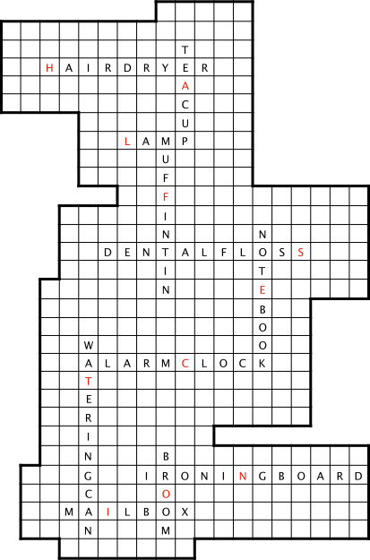

These are common household objects viewed from 2 angles each. The 11 objects are:
HAIR DRYER, MUFFIN TIN, WATERING CAN, NOTEBOOK, LAMP, DENTAL FLOSS, IRONING BOARD, TEACUP, ALARM CLOCK, BROOM, and MAILBOX.
For each object, there's an associated room:
1. Dining Room - TEACUP
2. Vanity Room - HAIR DRYER
3. Living Room - LAMP
4. Kitchen - MUFFIN TIN
5. Study - NOTEBOOK
6. Bathroom - DENTAL FLOSS
7. Garden - WATERING CAN
8. Bedroom - ALARM CLOCK
9. Closet - BROOM
10. Laundry Room - IRONING BOARD
11. Front Yard - MAILBOX
You can fit the names of the objects into the grid by putting the first letter of the object into its associated room square and forming a criss-cross. The complete grid is below. If you arrange the footprint squares correctly on the names of their objects, the footprints can make a single path through all 11 objects. Hitting the red squares spells out HALF SECTION.
